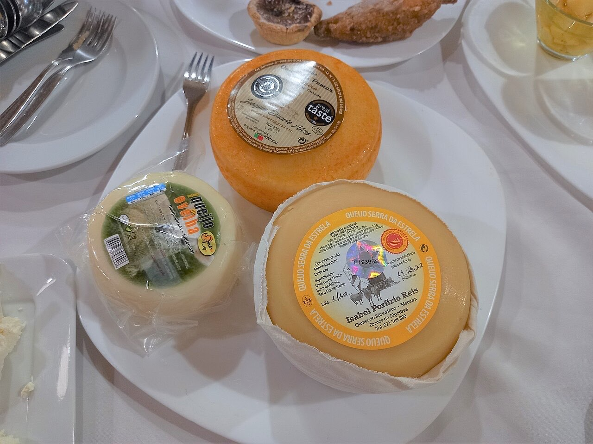
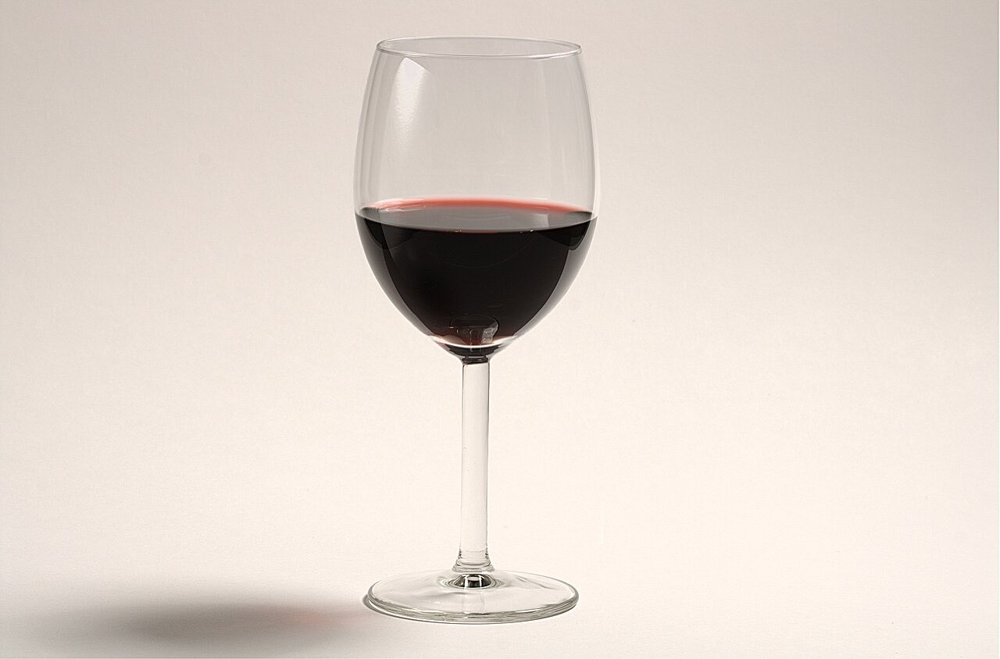
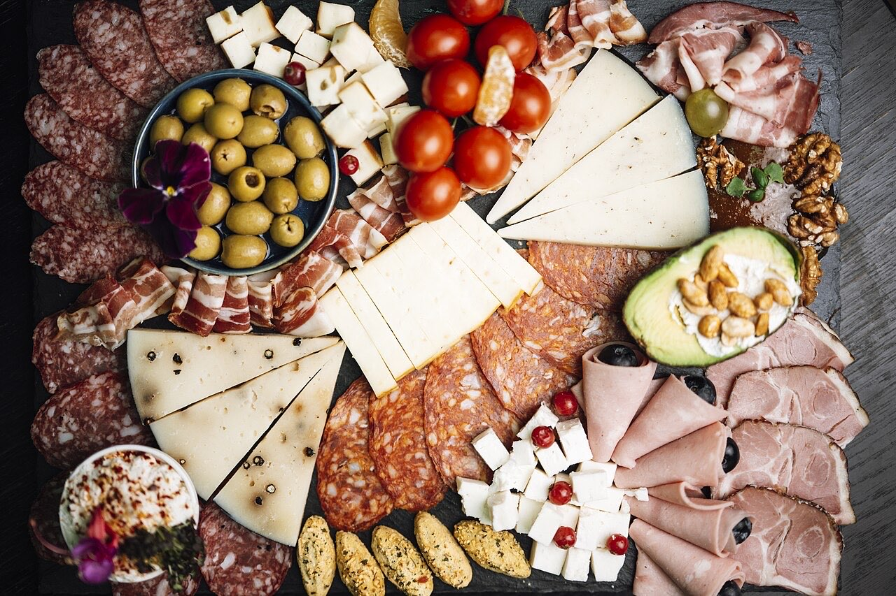

Bar de vinhos / petiscos · Centro
Vinho, petiscos e boa conversa
Um copo de vinho e uns petiscos a meio da tarde ou à noite.
4,7★ em 54 avaliações no Google.
Nos números 49-51, no centro. Reserve por WhatsApp ou telefone.
O Mercatus da Condessa é um bar de vinhos e petiscos no Largo Condessa do Juncal, no centro de Guimarães. Um bom pretexto para petiscar com amigos e brindar ao fim do dia.



Fotografias ilustrativas — no site final usamos as vossas.
Pedido de reserva
Escolha o dia e a hora — o pedido chega por WhatsApp e confirmamos logo.
↑ Assim chegaria a mensagem ao vosso WhatsApp. (Nesta demonstração nada é enviado.)
Onde estamos
Proposta para Mercatus da Condessa
Esta página foi feita de propósito para Mercatus da Condessa por João Machado, programador web aqui de Guimarães. Inclui:
Eu trato do alojamento e da manutenção. Sem compromisso.